Project notes
Visual Question Answering (VQA): From Baselines to LVLMs
Building and benchmarking Visual Question Answering systems step by step: from flattened-pixel MLP and ResNet50 + BiLSTM baselines to fine-tuned ViT + BERT, fusion ablations, Bottom-Up Top-Down attention, counterfactual debiasing, and zero-shot LLaVA-1.5 inference.
In this project, we walk step by step through Visual Question Answering (VQA), one of the foundational benchmarks of multimodal deep learning. Given an input image and a free-form natural language question about that image, a VQA system must extract visual semantics, understand linguistic intent, align both modalities, and output an accurate answer. Following a structured lecture progression, we start from core problem framing and datasets (VQAv2 and ViInfographicVQA), implement three progressively stronger architectures in PyTorch (MLP, CNN + BiLSTM, and ViT + BERT), run controlled ablations on fusion operators and post-fusion networks, and conclude with modern research directions including Bottom-Up and Top-Down Attention, language bias debiasing (VQA-CP, CSS, RUBi), and Large Vision-Language Models (LLaVA).
1. Introduction to Visual Question Answering and Datasets
1.1 What Is VQA and How Is It Formulated?
Visual Question Answering (VQA) is a multimodal machine learning task that receives an image \(I\) together with a natural language question \(Q\) and predicts an answer \(A\) grounded in the visual scene. Unlike single-modality tasks such as image classification or text sentiment analysis, VQA demands fine-grained cross-modal reasoning: even two nearly identical scenes can require opposite answers when a single visual relationship changes.
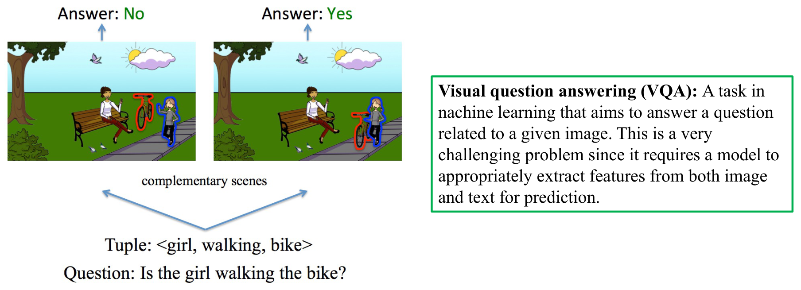
Almost every classical VQA architecture follows a three-stage blueprint: (1) Features Extraction, where an image encoder maps pixels to a visual representation and a question encoder maps tokens to a textual representation; (2) Features Fusion, which combines both modalities into a joint representation; and (3) an Answer Generator, which maps the fused features to the final answer.

When designing a VQA system, two high-level architectural choices shape the entire training pipeline:
- Classification vs. Sequence-to-Sequence (Seq-to-Seq): Treating VQA as multi-class classification restricts predictions to a fixed vocabulary of the top-\(K\) most frequent training answers (for example,
"yes","no","2","Feverfew"). This simplifies optimization with standard Cross-Entropy loss and works well for short factual responses, whereas a Seq-to-Seq decoder generates open-ended full sentences token by token (such as"This is a Tanacetum Parthenium."). - Early Fusion vs. Late Fusion: In Early Fusion, visual and textual inputs are merged before deep joint processing so cross-modal interactions can occur across all layers. In Late Fusion, each modality passes through its own dedicated encoder first, and the high-level embeddings are aggregated near the decision head.
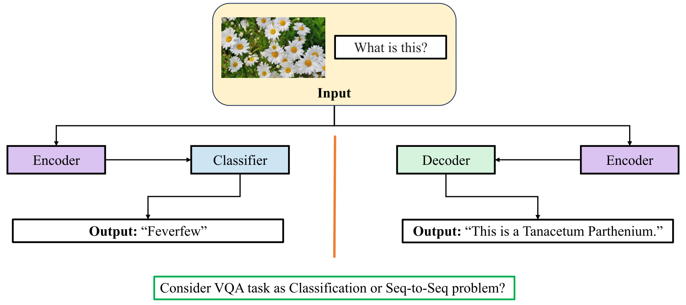
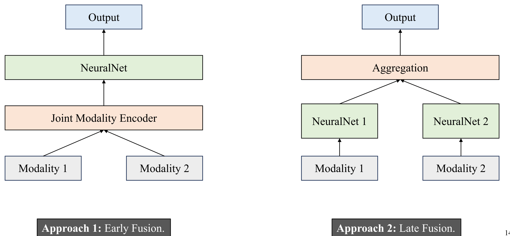
Even for humans, visual questions span a wide spectrum of reasoning difficulty: object recognition, color and attribute identification, spatial relations, reading embedded scene text (OCR), and object counting. Counting questions illustrate this gap clearly: counting all giraffes in a scene already requires object localization, while counting only the giraffes currently drinking water requires combining localization with fine-grained action recognition.
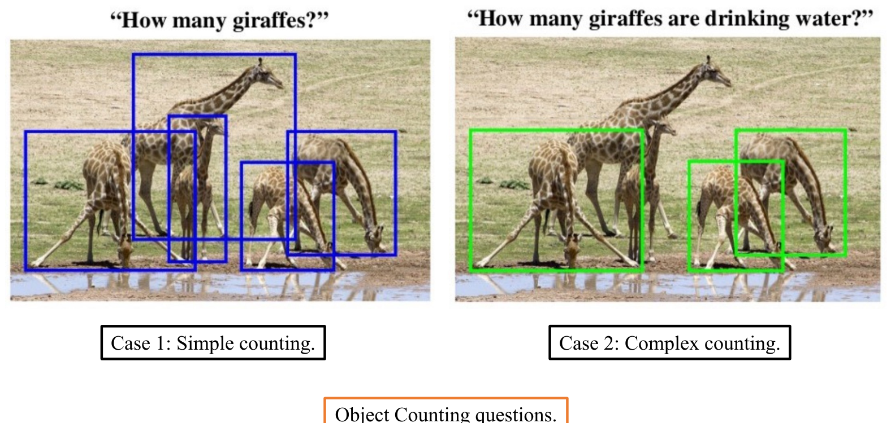
1.2 Benchmark Datasets: VQAv2 and ViInfographicVQA
To evaluate models under very different visual regimes, our experiments use curated subsets of two complementary benchmarks:
- VQAv2 (English, Natural Scenes): Built on real-world MS COCO photographs, covering Yes/No, numeric, and short open-ended questions. A key design contribution of VQAv2 is balanced pairs: for almost every question, the dataset includes two visually similar images that yield different answers (for example,
"Is the umbrella upside down?"answered"yes"on one photo and"no"on another), penalizing models that guess purely from text statistics. - ViInfographicVQA (Vietnamese, Dense Text Infographics): Composed of Vietnamese infographics, posters, and statistical charts where answers frequently depend on reading numbers, legends, charts, and structured layout rather than recognizing natural objects alone.
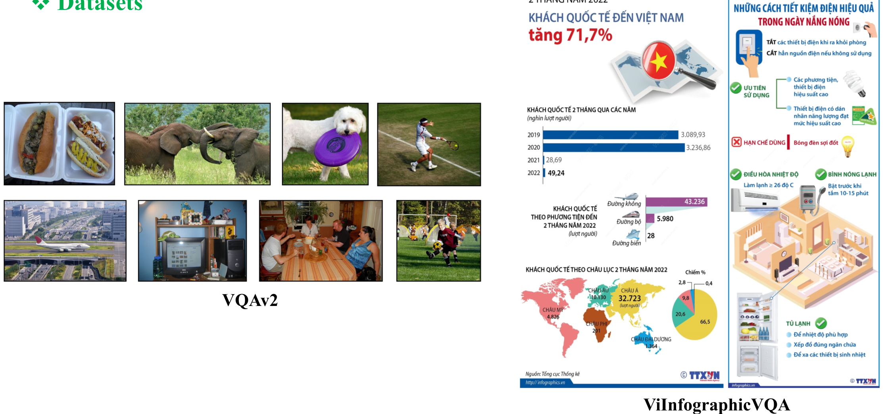
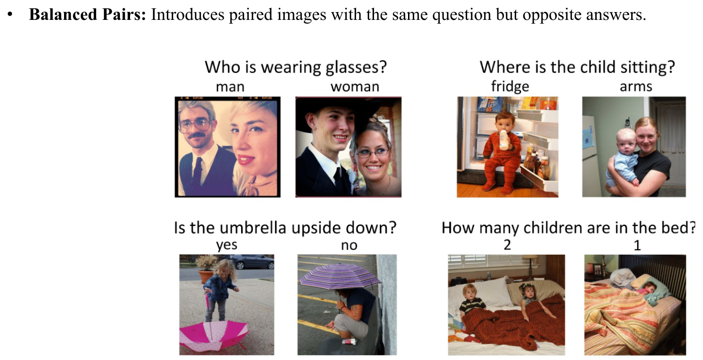
| Dataset | Language | Original Images | Original QA Pairs | Project Images | Project QA Pairs |
|---|---|---|---|---|---|
| VQAv2 | English | ~204,000 | ~1,100,000 | 4,417 | 7,000 |
| ViInfographicVQA | Vietnamese | 6,747 | 20,409 | 1,570 | 7,000 |
Table 1. Statistics of the full benchmark datasets and the balanced 7,000-QA project subsets used throughout our experiments.
Across all three baseline approaches below, we follow a consistent engineering workflow: (1) load libraries and set random seeds, (2) build the dataset, image transforms, and answer vocabulary, (3) construct the model architecture, (4) define training and evaluation routines, (5) run optimization, and (6) evaluate on held-out validation and test splits.
2. Approach 1: Multi-Layer Perceptron (MLP) Baseline and Metrics
Before introducing convolutional networks or Transformers, it is instructive to build the simplest possible end-to-end multimodal baseline: resize and flatten the raw RGB image into a 1D pixel vector, encode the question with a bag-of-words TF-IDF vector, concatenate both vectors, and classify the answer using a Multi-Layer Perceptron (MLP).
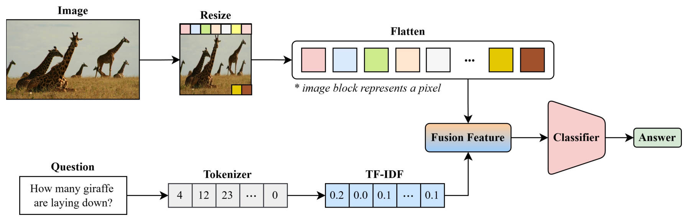
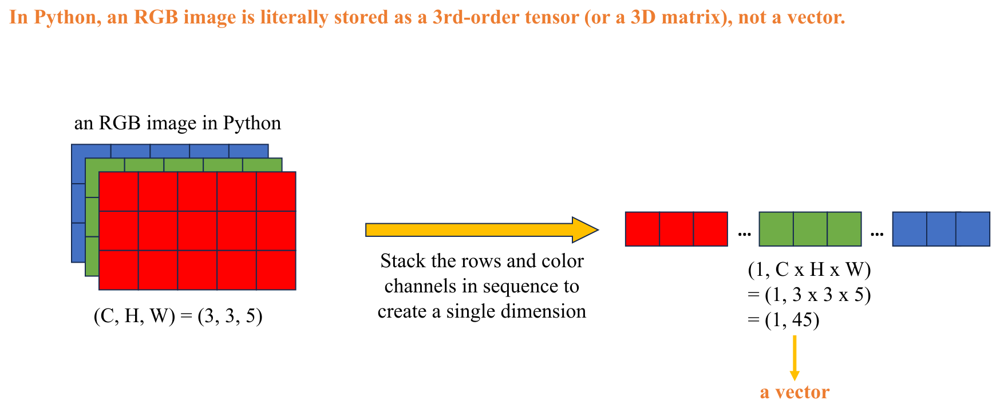
2.1 Dataset Structure and PyTorch DataLoader
Each split (train.json, val.json, test.json) is stored as a JSON list of records containing the relative image_path, the question string, the canonical majority answer, and the full list of 10 human annotator answers needed to compute official VQA Accuracy:
[
{
"image_path": "images/COCO_train2014_000000262465.jpg",
"question": "What is on top of the skis?",
"answer": "snow",
"answers": [
"snow", "snow", "snow", "snow", "snow",
"snow", "snow", "snow", "snow", "snow"
]
}
]
A shared PyTorch VQADataset loads each RGB image, applies resizing and normalization transforms, maps the canonical answer string to its integer class ID via an answer vocabulary dictionary (vocab), and preserves the raw annotator list for metric evaluation:
import json
import os
from PIL import Image
from torch.utils.data import Dataset
class VQADataset(Dataset):
def __init__(self, json_path, data_dir, transform=None, vocab=None):
with open(json_path, "r", encoding="utf-8") as f:
self.data = json.load(f)
self.data_dir = data_dir
self.transform = transform
self.vocab = vocab
def __len__(self):
return len(self.data)
def __getitem__(self, idx):
item = self.data[idx]
# Load RGB image and apply transforms
img_path = os.path.join(self.data_dir, item["image_path"])
image = Image.open(img_path).convert("RGB")
if self.transform:
image = self.transform(image)
question = item["question"]
answer = item["answer"]
answer_idx = self.vocab.get(answer, -1)
answers = item.get("answers", [answer])
return {
"image": image,
"question": question,
"answer": answer_idx,
"raw_answer": answer,
"answers": answers,
}
2.2 Flattened Pixels + TF-IDF Architecture
For an input image resized to \(H \times W\) with 3 color channels, flattening produces a vector of size \(3 \cdot H \cdot W\) (for example, \(3 \times 224 \times 224 = 150{,}528\) dimensions). On the text side, a scikit-learn TfidfVectorizer(max_features=1000) fit on training questions transforms each question into a sparse 1,000-dimensional vector. Both vectors are concatenated along dim=1, projected through a bottleneck layer with ReLU and Dropout (0.5), and passed to a two-layer classification head:
import torch
import torch.nn as nn
class MLPBaseline(nn.Module):
def __init__(self, num_classes, img_size, tfidf_dim, tfidf_vectorizer, hidden_dim=512):
super().__init__()
self.img_size = img_size
self.tfidf_dim = tfidf_dim
self.img_flatten_dim = 3 * img_size * img_size
self.tfidf_vectorizer = tfidf_vectorizer
fusion_dim = self.img_flatten_dim + tfidf_dim
self.bottleneck = nn.Sequential(
nn.Linear(fusion_dim, hidden_dim),
nn.ReLU(),
nn.Dropout(0.5),
)
self.classifier = nn.Sequential(
nn.Linear(hidden_dim, hidden_dim // 2),
nn.ReLU(),
nn.Dropout(0.5),
nn.Linear(hidden_dim // 2, num_classes),
)
def encode_questions(self, questions):
tfidf_features = self.tfidf_vectorizer.transform(questions).toarray()
return torch.FloatTensor(tfidf_features)
def forward(self, images, questions):
batch_size = images.size(0)
img_features = images.view(batch_size, -1)
text_features = self.encode_questions(questions).to(images.device)
combined = torch.cat([img_features, text_features], dim=1)
fused_features = self.bottleneck(combined)
output = self.classifier(fused_features)
return output
2.3 Evaluation Metrics: VQA Accuracy and ANLS
Natural language answers often have legitimate surface variations or annotator disagreement. Accordingly, VQA research relies on two specialized evaluation metrics tailored to our two datasets:
1. VQA Accuracy (used for VQAv2): Each VQAv2 question is annotated independently by 10 human annotators. A predicted answer \(\hat{a}\) receives full credit (1.0) if at least 3 of the 10 human responses match it identically, and proportional partial credit otherwise:
def compute_vqa_accuracy(prediction, ground_truth_answers):
if not ground_truth_answers:
return 0.0
count = 0
pred = prediction.lower().strip()
for ans in ground_truth_answers:
if ans.lower().strip() == pred:
count += 1
return min(1.0, count / 3.0)
2. Average Normalized Levenshtein Similarity, ANLS (used for ViInfographicVQA): Infographic answers are often multi-word phrases, numbers, or OCR strings where minor character typos should not incur a complete zero penalty as long as the predicted string is close to the target. Normalized Levenshtein distance divides the character edit distance by the longer string length, and ANLS applies a cutoff threshold \(\tau = 0.5\):
def compute_anls(target, prediction):
target = target.lower().strip()
prediction = prediction.lower().strip()
if not target or not prediction:
return 0.0 if target != prediction else 1.0
dist = levenshtein_distance(target, prediction)
max_len = max(len(target), len(prediction))
score = 1.0 - float(dist) / float(max_len)
return score if score >= 0.5 else 0.0
When trained on our VQAv2 subset for 10 epochs, the MLP baseline collapses near random guessing: only 3.27% Train, 2.93% Val, and 1.27% Test VQA Accuracy (7.40% Top-5, 0.0144 ANLS). Flattening raw RGB pixels throws away translation invariance and local visual patterns, while TF-IDF ignores word order and syntactic roles (for instance, treating "man bites dog" identically to "dog bites man").
3. Approach 2: CNN + BiLSTM Baseline
3.1 Pretrained ResNet50 and Bidirectional LSTM
To repair both representation bottlenecks, our second architecture replaces each naive encoder with a modality-appropriate deep backbone:
- Visual Encoder (Frozen Pretrained ResNet50): Using
timm.create_model('resnet50', pretrained=True, num_classes=0)extracts a compact 2,048-dimensional semantic feature vector capturing objects, textures, and spatial hierarchy. Keeping the CNN weights frozen speeds up training and prevents overfitting on a 7,000-QA dataset. - Question Encoder (Embedding + 2-Layer Bi-LSTM): Questions are tokenized against a word vocabulary built from the training split (with
<PAD>: 0and<UNK>: 1), padded or truncated tomax_len=64, embedded into 300-dimensional vectors, and passed through a 2-layer bidirectional LSTM (hidden_dim=512per direction).
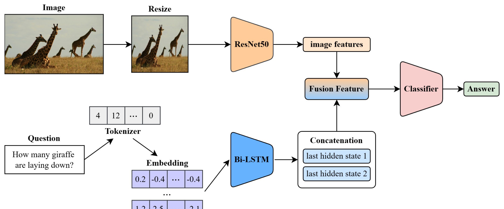
Because a bidirectional LSTM processes the question both left-to-right and right-to-left, concatenating the final forward hidden state \(\vec{h}_T\) (hidden[-2]) and final backward hidden state \(\overleftarrow{h}_1\) (hidden[-1]) yields a 1,024-dimensional language vector summarizing full-sentence context:
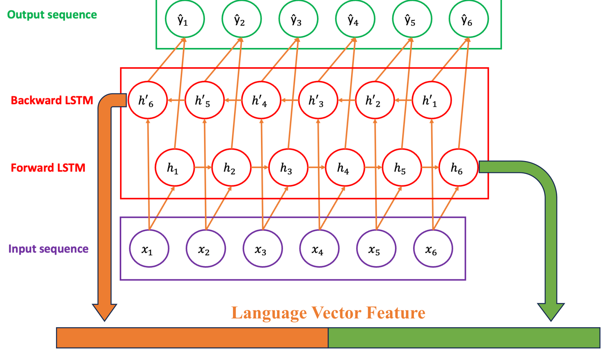
import timm
import torch
import torch.nn as nn
class CNNLSTMBaseline(nn.Module):
def __init__(
self,
num_classes,
vocab_size,
word_to_idx,
hidden_dim=512,
lstm_layers=2,
embed_dim=300,
max_len=64,
):
super().__init__()
# Frozen pretrained ResNet50 visual backbone
self.cnn = timm.create_model("resnet50", pretrained=True, num_classes=0)
for param in self.cnn.parameters():
param.requires_grad = False
cnn_output_dim = self.cnn.num_features
# Trainable token embeddings and 2-layer Bi-LSTM question encoder
self.embedding = nn.Embedding(vocab_size, embed_dim)
self.lstm = nn.LSTM(
embed_dim,
hidden_dim,
lstm_layers,
batch_first=True,
bidirectional=True,
)
lstm_output_dim = hidden_dim * 2
fusion_dim = cnn_output_dim + lstm_output_dim
self.bottleneck = nn.Sequential(
nn.Linear(fusion_dim, hidden_dim),
nn.ReLU(),
nn.Dropout(0.5),
)
self.classifier = nn.Linear(hidden_dim, num_classes)
self.word_to_idx = word_to_idx
self.max_len = max_len
def tokenize(self, questions):
batch_tokens = []
for q in questions:
words = q.lower().split()
tokens = [self.word_to_idx.get(w, 1) for w in words]
if len(tokens) < self.max_len:
tokens = tokens + [0] * (self.max_len - len(tokens))
else:
tokens = tokens[: self.max_len]
batch_tokens.append(tokens)
return torch.LongTensor(batch_tokens)
def forward(self, images, questions):
img_features = self.cnn(images)
question_tokens = self.tokenize(questions).to(images.device)
question_embeds = self.embedding(question_tokens)
_, (hidden, _) = self.lstm(question_embeds)
text_features = torch.cat([hidden[-2], hidden[-1]], dim=1)
combined = torch.cat([img_features, text_features], dim=1)
fused_features = self.bottleneck(combined)
output = self.classifier(fused_features)
return output
3.2 MLP vs. CNN + BiLSTM Results
Switching from raw pixels + TF-IDF to pretrained ResNet50 + Bi-LSTM produces a dramatic leap in generalization across every split: Test VQA Accuracy surges more than 40x from 1.27% to 53.00% (and up to 56.23% after tuning batch size and image resolution).
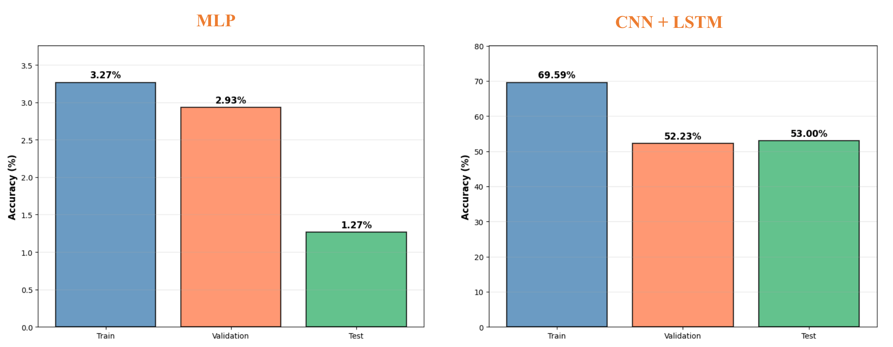
4. Approach 3: ViT + BERT Baseline
4.1 Vision Transformer and BERT / PhoBERT Encoders
Our third architecture upgrades both modality encoders to pretrained Transformer backbones:
- Vision Transformer (ViT):
vit_base_patch16_224splits the image into \(16 \times 16\) patches and applies global self-attention across all patches, capturing long-range visual relationships without convolutional locality constraints. - Pretrained Language Model (BERT / PhoBERT): Using HuggingFace
AutoModelandAutoTokenizer, we encode English VQAv2 questions with BERT (or RoBERTa) and Vietnamese ViInfographicVQA questions withvinai/phobert-base, extracting the final-layer[CLS]token embeddingoutputs.last_hidden_state[:, 0, :].
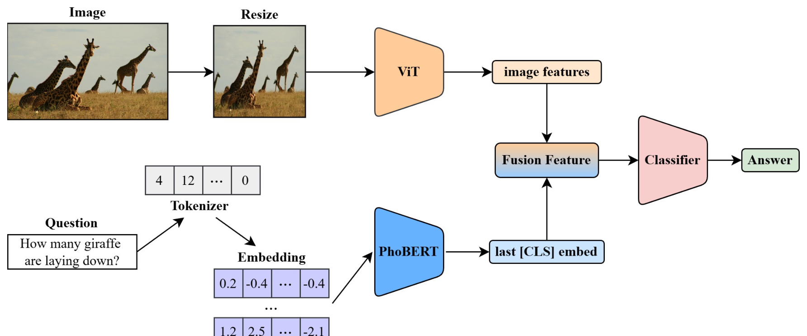
import timm
import torch
import torch.nn as nn
from transformers import AutoModel
class ViTBERTBaseline(nn.Module):
def __init__(
self,
num_classes,
bert_model,
bert_tokenizer,
hidden_dim=512,
img_size=224,
max_len=64,
freeze_encoders=True,
):
super().__init__()
self.vit = timm.create_model(
"vit_base_patch16_224",
pretrained=True,
num_classes=0,
img_size=img_size,
)
vit_output_dim = self.vit.num_features
self.tokenizer = bert_tokenizer
self.bert = AutoModel.from_pretrained(bert_model)
bert_output_dim = self.bert.config.hidden_size
if freeze_encoders:
for param in self.vit.parameters():
param.requires_grad = False
for param in self.bert.parameters():
param.requires_grad = False
fusion_dim = vit_output_dim + bert_output_dim
self.bottleneck = nn.Sequential(
nn.Linear(fusion_dim, hidden_dim),
nn.ReLU(),
nn.Dropout(0.5),
)
self.classifier = nn.Linear(hidden_dim, num_classes)
self.max_len = max_len
def encode_questions(self, questions, device):
encoding = self.tokenizer(
questions,
padding=True,
truncation=True,
max_length=self.max_len,
return_tensors="pt",
)
input_ids = encoding["input_ids"].to(device)
attention_mask = encoding["attention_mask"].to(device)
outputs = self.bert(input_ids=input_ids, attention_mask=attention_mask)
cls_embedding = outputs.last_hidden_state[:, 0, :]
return cls_embedding
def forward(self, images, questions):
img_features = self.vit(images)
text_features = self.encode_questions(questions, images.device)
combined = torch.cat([img_features, text_features], dim=1)
fused_features = self.bottleneck(combined)
output = self.classifier(fused_features)
return output
4.2 Frozen vs. Fine-Tuned Encoders
An unexpected finding emerges when both ViT and BERT are kept completely frozen (requires_grad = False) and only the linear bottleneck + classifier is trained for 10 epochs at lr = 1e-3: frozen ViT + BERT underperforms CNN + BiLSTM (~45.6% Val / ~46.8% Test V-Acc vs. 53.4% Val / 56.2% Test for CNN + BiLSTM) and shows earlier validation loss divergence.
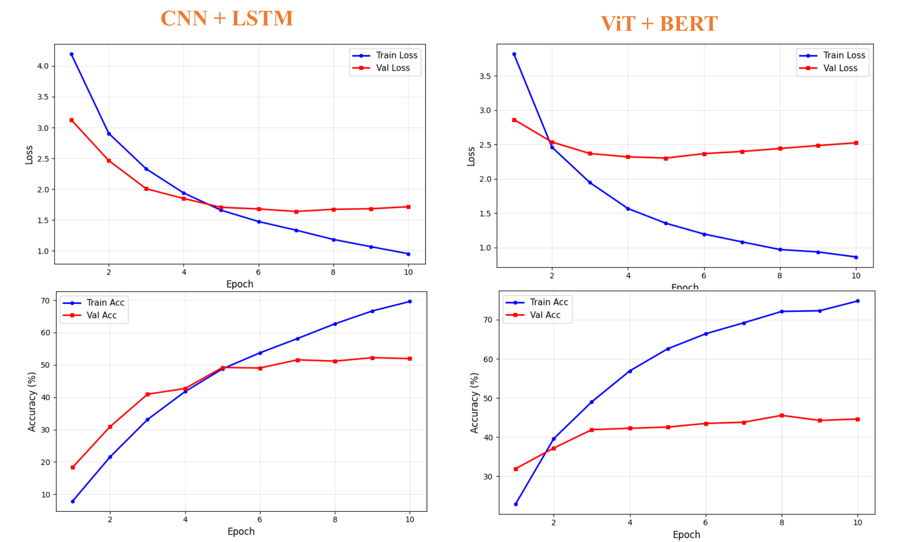
Why does this happen? In CNN + BiLSTM, the entire question encoder (nn.Embedding + 2-layer Bi-LSTM) is trainable, so it actively reshapes its language representation to query ResNet50's visual features. By contrast, when both ViT and BERT are frozen, the ImageNet-trained ViT [CLS] token and the masked-language-model BERT [CLS] token live in completely separate representation spaces that were never adapted to answer questions jointly. Once we unfreeze both ViT and BERT using differential learning rates (a gentle lr = 1e-5 for the pretrained Transformer encoders and lr = 1e-3 for the classifier head), ViT + BERT surpasses every baseline by a wide margin.
5. Experiments and Ablation Studies
5.1 Main Benchmark Results on VQAv2 and ViInfographicVQA
We first benchmark all three frozen-backbone configurations across batch sizes \(\{16, 32\}\) and image resolutions \(\{224, 448\}\) for 10 epochs with learning rate \(10^{-3}\), then compare against our fine-tuned (unfrozen) ViT + BERT configuration.
| Architecture | Batch | Image | LR | VQAv2 V-Acc (%) | VQAv2 Top-5 (%) | ViInfo Acc (%) | ViInfo ANLS | ||||
|---|---|---|---|---|---|---|---|---|---|---|---|
| Val | Test | Val | Test | Val | Test | Val | Test | ||||
| MLP | 16 | 224 | 1e-3 | 3.10 | 2.20 | 10.33 | 8.33 | 1.90 | 0.63 | 0.0400 | 0.0140 |
| CNN + LSTM | 16 | 224 | 1e-3 | 52.77 | 54.70 | 83.57 | 82.80 | 6.40 | 3.17 | 0.0849 | 0.0893 |
| ViT + BERT (frozen) | 16 | 224 | 1e-3 | 44.50 | 47.87 | 73.33 | 76.23 | 4.10 | 1.69 | 0.0549 | 0.0304 |
| MLP | 32 | 224 | 1e-3 | 2.97 | 1.30 | 9.60 | 6.70 | 1.80 | 0.63 | 0.0420 | 0.0140 |
| CNN + LSTM | 32 | 224 | 1e-3 | 53.43 | 56.23 | 82.43 | 84.93 | 6.80 | 4.86 | 0.0876 | 0.0893 |
| ViT + BERT (frozen) | 32 | 224 | 1e-3 | 45.57 | 46.80 | 74.60 | 77.33 | 4.20 | 3.48 | 0.0561 | 0.0461 |
| CNN + LSTM | 32 | 448 | 1e-3 | 52.27 | 56.07 | 82.43 | 81.37 | 5.90 | 4.86 | 0.0757 | 0.0981 |
| ViT + BERT (unfrozen) | 32 | 448 | 1e-5 / 1e-3 | 58.40 | 60.73 | 85.00 | 84.63 | 9.90 | 18.16 | 0.1579 | 0.2601 |
Table 2. Main benchmark results across VQAv2 and ViInfographicVQA (10 epochs). Unfreezing ViT + BERT with a 1e-5 backbone learning rate unlocks the highest performance on both datasets.
Two key observations stand out from Table 2. First, unfreezing ViT + BERT improves VQAv2 Test V-Acc by nearly +14 percentage points over frozen ViT + BERT (60.73% vs. 46.80%) and more than triples ViInfographicVQA Test Accuracy (18.16% vs. 4.86% for CNN + LSTM) and ANLS (0.2601 vs. 0.0981). Second, even our strongest closed-vocabulary classifier reaches only 18.16% on ViInfographicVQA because infographic questions depend heavily on fine-grained OCR text extraction, which classification models without OCR tokens cannot easily read.
5.2 Ablation Study 1: Multimodal Fusion Operations
Given extracted visual features \(v \in \mathbb{R}^{d_v}\) and textual features \(q \in \mathbb{R}^{d_q}\), how should we combine them? We test four fusion operators while holding the rest of each pipeline constant (Batch = 32, Image = 224, 10 epochs, frozen backbones): direct Concat \([v; q]\), projected Linear -> Concat \([W_v v; W_q q]\), element-wise addition Linear -> Plus \((W_v v + W_q q)\), and element-wise Hadamard multiplication Linear -> Multiply \((W_v v \odot W_q q)\).
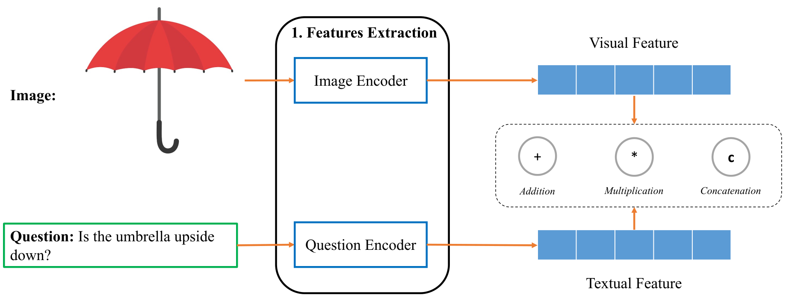
| Architecture | Fusion Operation | VQAv2 V-Acc (%) | VQAv2 Top-5 (%) | ViInfo Acc (%) | ViInfo ANLS | ||||
|---|---|---|---|---|---|---|---|---|---|
| Val | Test | Val | Test | Val | Test | Val | Test | ||
| MLP | Concat | 2.97 | 1.30 | 9.60 | 6.70 | 1.80 | 0.63 | 0.0420 | 0.0140 |
| MLP | Linear -> Concat | 2.73 | 1.63 | 10.43 | 7.63 | 1.60 | 0.53 | 0.0365 | 0.0259 |
| MLP | Linear -> Plus | 3.17 | 1.93 | 10.50 | 8.57 | 2.20 | 0.74 | 0.0423 | 0.0265 |
| MLP | Linear -> Multiply | 17.87 | 17.27 | 42.73 | 45.17 | 3.30 | 2.11 | 0.0558 | 0.0480 |
| CNN + LSTM | Concat | 53.43 | 56.23 | 82.43 | 84.93 | 6.80 | 4.86 | 0.0876 | 0.0893 |
| CNN + LSTM | Linear -> Concat | 51.50 | 54.73 | 81.63 | 82.63 | 6.70 | 5.70 | 0.0837 | 0.0956 |
| CNN + LSTM | Linear -> Plus | 50.63 | 53.43 | 81.20 | 81.63 | 5.40 | 4.22 | 0.0825 | 0.0908 |
| CNN + LSTM | Linear -> Multiply | 49.30 | 50.10 | 79.43 | 80.60 | 5.20 | 5.28 | 0.0725 | 0.1108 |
| ViT + BERT (frozen) | Concat | 45.57 | 46.80 | 74.60 | 77.33 | 4.20 | 3.48 | 0.0561 | 0.0461 |
| ViT + BERT (frozen) | Linear -> Concat | 48.03 | 49.93 | 77.60 | 79.53 | 4.70 | 2.64 | 0.0620 | 0.0491 |
| ViT + BERT (frozen) | Linear -> Plus | 47.17 | 47.77 | 76.73 | 77.67 | 4.40 | 2.96 | 0.0564 | 0.0459 |
| ViT + BERT (frozen) | Linear -> Multiply | 47.00 | 48.63 | 75.93 | 78.47 | 4.10 | 3.59 | 0.0574 | 0.0446 |
Table 3. Ablation on multimodal fusion operations (Batch = 32, Image = 224, 10 epochs, frozen backbones).
Look at the remarkable jump for MLP under Linear -> Multiply: VQAv2 Test Accuracy shoots from 1.30% to 17.27% (and Top-5 from 6.70% to 45.17%)! Because raw pixel concatenation is dominated in dimension by 150,528 pixel values versus 1,000 TF-IDF features, projecting both modalities to a shared dimension and multiplying them forces direct multiplicative gating between image and question signals. Meanwhile, for frozen ViT + BERT, adding linear alignment projections (Linear -> Concat) lifts VQAv2 Test Accuracy from 46.80% to 49.93% by bridging the mismatch between the two frozen feature spaces.
5.3 Ablation Study 2: Post-Fusion Networks
Next, we fix concatenation as the fusion step and vary the Answer Generator architecture placed after fusion: (1) a standard MLP (None), (2) LSTM + MLP, and (3) Attention + MLP.
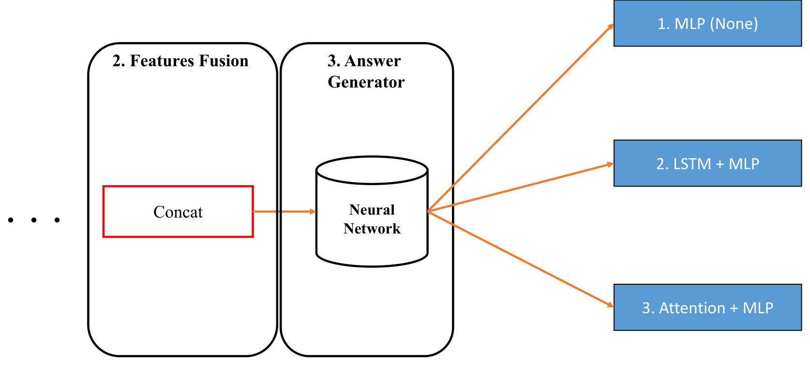
| Architecture | Post-Fusion | VQAv2 V-Acc (%) | VQAv2 Top-5 (%) | ViInfo Acc (%) | ViInfo ANLS | ||||
|---|---|---|---|---|---|---|---|---|---|
| Val | Test | Val | Test | Val | Test | Val | Test | ||
| MLP | None (MLP) | 2.97 | 1.30 | 9.60 | 6.70 | 1.80 | 0.63 | 0.0420 | 0.0140 |
| MLP | LSTM | 5.60 | 6.40 | 19.50 | 20.17 | 2.30 | 1.48 | 0.0522 | 0.0425 |
| MLP | Attention | 3.17 | 1.57 | 10.50 | 7.70 | 2.00 | 0.42 | 0.0383 | 0.0180 |
| CNN + LSTM | None (MLP) | 53.43 | 56.23 | 82.43 | 84.93 | 6.80 | 4.86 | 0.0876 | 0.0893 |
| CNN + LSTM | LSTM | 50.23 | 51.67 | 80.83 | 82.63 | 6.60 | 5.39 | 0.0862 | 0.0953 |
| CNN + LSTM | Attention | 52.30 | 54.27 | 80.43 | 82.50 | 7.00 | 6.02 | 0.0906 | 0.1101 |
| ViT + BERT (frozen) | None (MLP) | 45.57 | 46.80 | 74.60 | 77.33 | 4.20 | 3.48 | 0.0561 | 0.0461 |
| ViT + BERT (frozen) | LSTM | 45.67 | 47.10 | 75.33 | 77.57 | 4.80 | 2.96 | 0.0604 | 0.0465 |
| ViT + BERT (frozen) | Attention | 47.37 | 49.37 | 75.50 | 77.97 | 4.10 | 2.85 | 0.0628 | 0.0510 |
Table 4. Ablation on post-fusion Answer Generator networks (Batch = 32, Image = 224, 10 epochs, frozen backbones).
Adding post-fusion Attention lifts frozen ViT + BERT on VQAv2 (+2.57% Test V-Acc) and pushes CNN + LSTM to its highest ViInfographicVQA scores (6.02% Test Acc and 0.1101 ANLS), while a clean MLP head remains the strongest and least overfit option for CNN + LSTM on VQAv2.
6. Discussion and Modern Directions
Our three baselines reveal three fundamental limitations of simple global-feature VQA classifiers: (1) pooling an entire image into one vector loses localized object details, (2) classifiers easily memorize statistical shortcuts in the question text instead of looking at the image, and (3) closed-set answer vocabularies cannot generalize to open-world visual reasoning. Modern VQA research tackles each limitation directly.
6.1 Bottom-Up and Top-Down Attention
Earlier spatial attention models overlaid a uniform grid (such as \(7 \times 7\) CNN feature cells) onto an image. Rigid grid cells slice across object boundaries and struggle to focus precisely on a specific object like a person's shirt. Bottom-Up and Top-Down Attention (Anderson et al., CVPR 2018) fixes this by replacing uniform grids with object-level regions proposed by a Faster R-CNN detector.
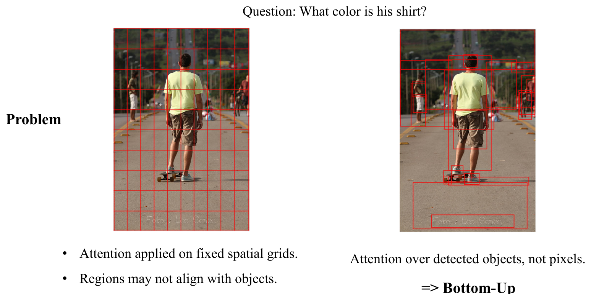
In the Bottom-Up and Top-Down architecture:
- Bottom-Up Visual Proposals: Faster R-CNN extracts \(k\) salient object-region features \(V = \{v_1, \dots, v_k\} \in \mathbb{R}^{k \times 2048}\).
- Question Encoding: A GRU encodes the embedded question into a single vector \(q \in \mathbb{R}^{512}\).
- Top-Down Attention Weights: Each region feature \(v_i\) is concatenated with \(q\), scored by a nonlinear layer, and normalized via softmax to compute attention weights \(\alpha_i\), yielding an attended visual vector \(\hat{v} = \sum_{i=1}^{k} \alpha_i v_i\).
- Multimodal Fusion: The attended visual vector \(\hat{v}\) and question vector \(q\) undergo element-wise product fusion before predicting candidate answer scores.
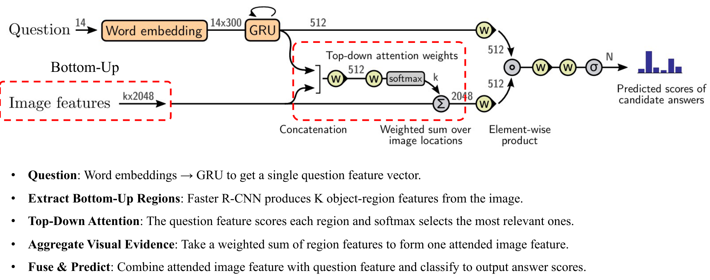
6.2 Language Bias and Debiasing (VQA-CP, CSS, RUBi)
A notorious failure mode in VQA is language bias: models learn statistical shortcuts from question phrasing alone and ignore the visual evidence. For example, if 80% of bananas in the training set are yellow, a biased model answers "yellow" to "What color is the banana?" even when shown a green banana. Similarly, if sky photos in training are predominantly blue, the model predicts "blue" on a red sunset sky.
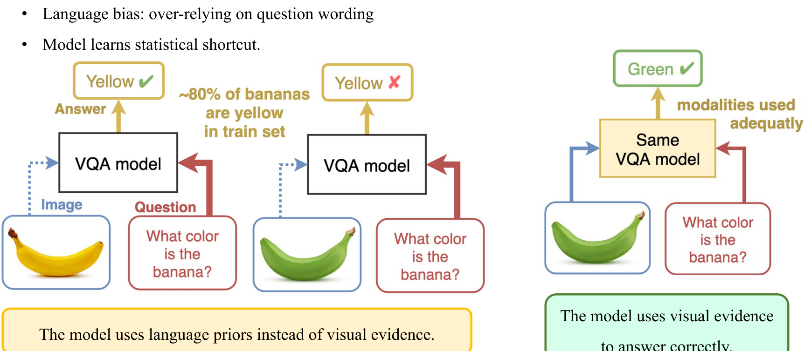
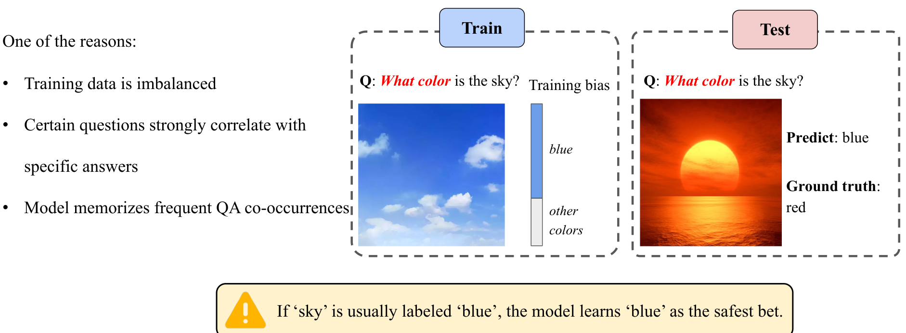
To measure and eliminate language shortcuts, the research community introduced both stricter benchmarks and explicit debiasing objectives:
- VQA-CP (VQA under Changing Priors): Re-splits train and test sets so that the answer distribution for each question type shifts substantially between training and evaluation. Models relying on text priors collapse sharply on VQA-CP, exposing whether visual grounding is genuine.
- CSS (Counterfactual Samples Synthesizing): Automatically constructs counterfactual training pairs by masking critical visual objects (V-CSS) or key question words (Q-CSS) and inverting the ground-truth target (for instance, masking a green tie changes the label to
NOT green). Jointly training on original and counterfactual examples forces the network to depend on causal visual and textual evidence. - RUBi (Reducing Unimodal Biases): Adds an auxiliary question-only branch during training that predicts answers purely from text. Its predictions dynamically reweight the main VQA branch via a sigmoid gate, down-weighting examples solvable by text shortcuts alone and forcing gradients onto visually grounded examples. At inference time, the auxiliary branch is removed completely.
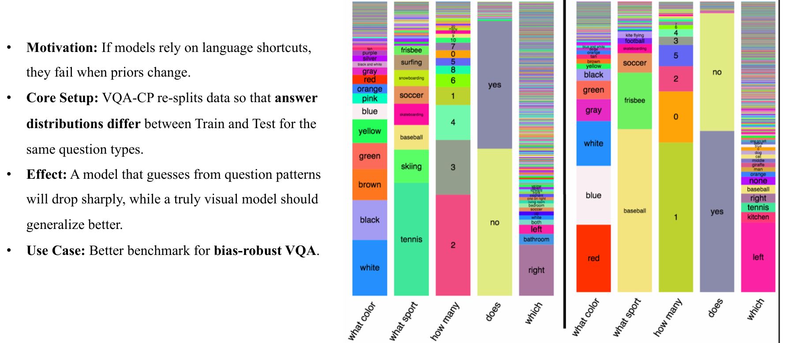
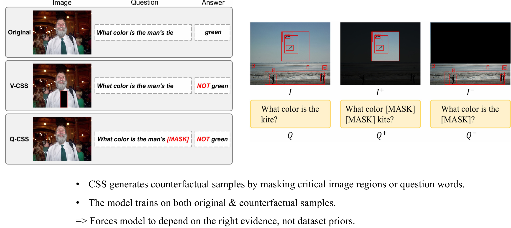
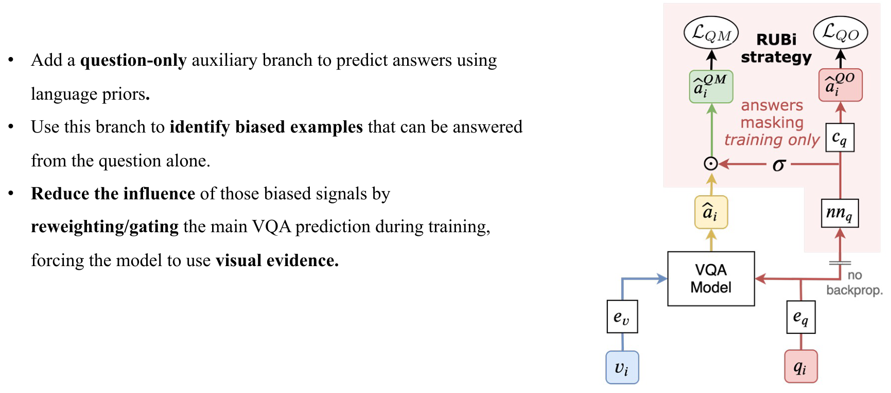
6.3 Large Vision-Language Models and 4-Bit LLaVA Inference
The modern paradigm shift in VQA moves away from task-specific classifiers entirely by connecting pretrained vision encoders directly to Large Language Models (LLMs), forming Large Vision-Language Models (LVLMs). Because an LLM only accepts token embeddings, an LVLM inserts a lightweight Projection Layer (a linear matrix \(W\) or small MLP) that maps visual patch embeddings from a frozen vision encoder (such as CLIP ViT) into the exact word-embedding space of the LLM.
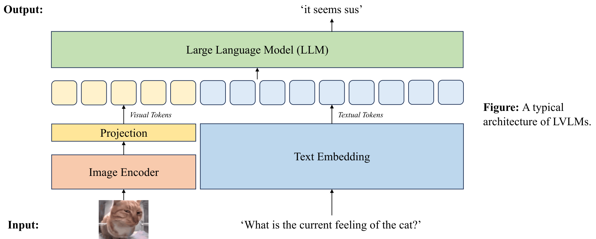
LLaVA (Large Language-and-Vision Assistant, Liu et al., NeurIPS 2023) popularized this clean, modular design: an input image \(X_v\) passes through a Vision Encoder to produce visual features \(Z_v\), which a trainable projection \(W\) converts into visual tokens \(H_v = W \cdot Z_v\). Concatenated with tokenized language instructions \(H_q\), the combined sequence is processed autoregressively by the language model \(f_\phi\) to generate free-form answers \(X_a\).
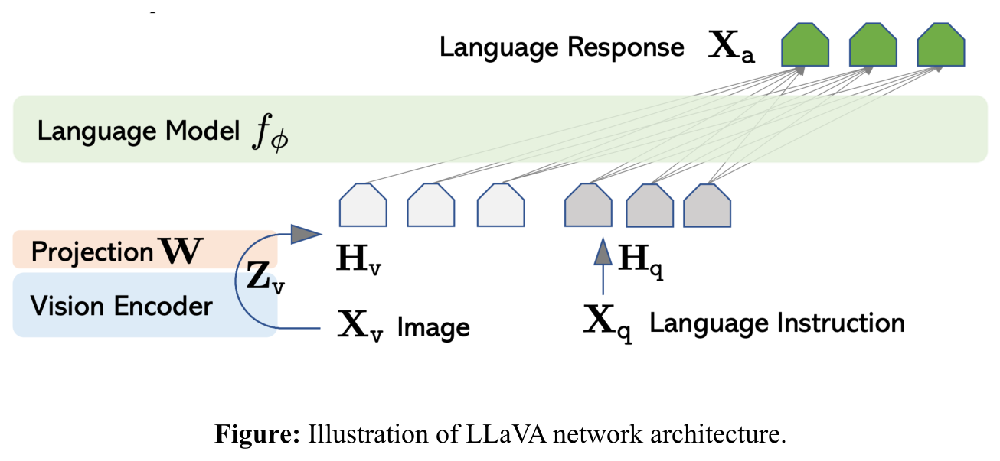
Thanks to HuggingFace transformers and bitsandbytes 4-bit quantization, we can load and run zero-shot inference with llava-hf/llava-1.5-7b-hf directly on a single consumer GPU in just a few lines of Python:
import os
import torch
from PIL import Image
from transformers import (
AutoProcessor,
BitsAndBytesConfig,
GenerationConfig,
LlavaForConditionalGeneration,
)
# 1. Configure 4-bit quantization for memory-efficient GPU inference
quantization_config = BitsAndBytesConfig(
load_in_4bit=True,
bnb_4bit_compute_dtype=torch.float16,
)
model_id = "llava-hf/llava-1.5-7b-hf"
device = "cuda" if torch.cuda.is_available() else "cpu"
processor = AutoProcessor.from_pretrained(model_id)
model = LlavaForConditionalGeneration.from_pretrained(
model_id,
quantization_config=quantization_config,
device_map=device,
)
# 2. Construct an instruction-following multimodal prompt
def create_prompt(question):
prompt = f"""### INSTRUCTION:
Your task is to answer the question based on the given image.
### USER: <image>
{question}
### ASSISTANT:"""
return prompt
# 3. Configure autoregressive decoding parameters
generation_config = GenerationConfig(
max_new_tokens=10,
do_sample=True,
temperature=0.1,
top_p=0.95,
top_k=50,
eos_token_id=model.config.eos_token_id,
pad_token_id=model.config.pad_token_id,
)
# 4. Run zero-shot VQA inference on a test sample
idx = 0
question = test_data[idx]["question"]
image_name = test_data[idx]["image_path"]
image_path = os.path.join("val2014-resized", image_name)
label = test_data[idx]["answer"]
image = Image.open(image_path).convert("RGB")
prompt = create_prompt(question)
inputs = processor(
prompt,
image,
padding=True,
return_tensors="pt",
).to(device)
output = model.generate(**inputs, generation_config=generation_config)
generated_text = processor.decode(output[0], skip_special_tokens=True)
print(f"Question: {question}")
print(f"Label: {label}")
print(f"Prediction: {generated_text.split('### ASSISTANT:')[-1].strip()}")
Qualitative comparison highlights the practical contrast between compact specialist models and zero-shot LVLMs: a fine-tuned ViT + RoBERTa classifier achieves strong closed-vocabulary VQA accuracy at a fraction of the compute cost, whereas a pretrained LLaVA-7B model handles diverse, unseen questions and nuanced visual scenes out of the box without any task-specific retraining.
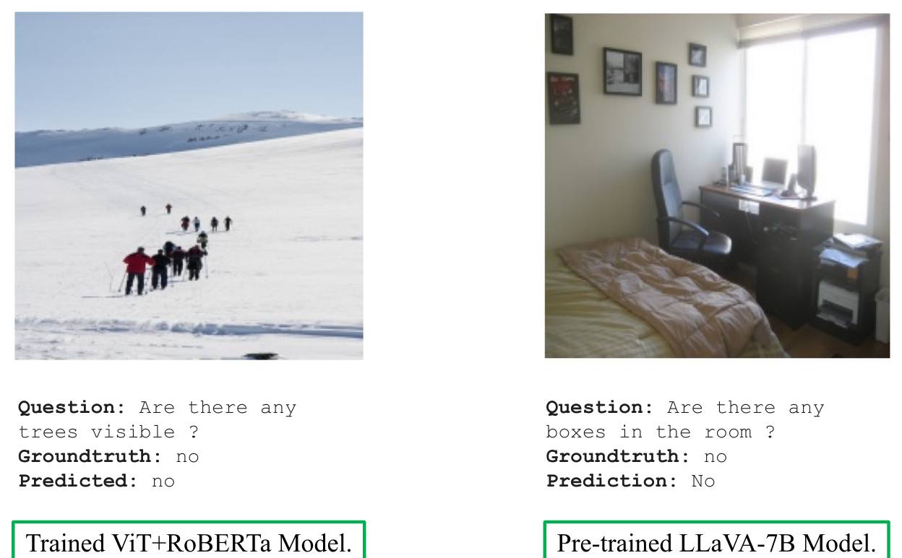
7. Summary and References
Walking through VQA from first principles reveals a clear progression in multimodal representation learning:
- Representation quality dominates: Flattening RGB pixels and TF-IDF bags of words fails completely (~1.3% Test V-Acc), whereas pretrained ResNet50 + trainable Bi-LSTM immediately reaches 56.23% V-Acc (84.93% Top-5) on VQAv2.
- Cross-modal alignment matters for Transformers: Freezing both ViT and BERT underperforms CNN + BiLSTM (~46.8% Test V-Acc) because two independently pretrained
[CLS]spaces are poorly aligned; unfreezing both encoders with differential learning rates (1e-5for encoders,1e-3for the classifier) yields our best results across both benchmarks (60.73% V-Acc on VQAv2 and 18.16% Acc / 0.2601 ANLS on ViInfographicVQA). - Fusion geometry can unlock weak features: Element-wise multiplication (
Linear -> Multiply) boosts MLP accuracy more than 13x (from 1.30% to 17.27%) by introducing direct multiplicative gating across modalities. - Modern VQA moves beyond global classification: Object-level attention (Bottom-Up and Top-Down), counterfactual and auxiliary-branch debiasing (VQA-CP, CSS, RUBi), and generative LVLMs (LLaVA) overcome the spatial, statistical, and vocabulary ceilings of classical classifiers.
References
- Goyal, Y., Khot, T., Summers-Stay, D., Batra, D., & Parikh, D. (2017). Making the V in VQA Matter: Elevating the Role of Image Understanding in Visual Question Answering (VQAv2). CVPR 2017.
- Anderson, P., He, X., Buehler, C., Teney, D., Johnson, M., Gould, S., & Zhang, L. (2018). Bottom-Up and Top-Down Attention for Image Captioning and Visual Question Answering. CVPR 2018.
- Agrawal, A., Batra, D., Parikh, D., & Kembhavi, A. (2018). Don't Just Assume; Look and Answer: Overcoming Priors for Visual Question Answering (VQA-CP). CVPR 2018.
- Cadene, R., Dancette, C., Ben-Younes, H., Cord, M., & Parikh, D. (2019). RUBi: Reducing Unimodal Biases for Visual Question Answering. NeurIPS 2019.
- Chen, L., Yan, X., Xiao, J., Zhang, H., Pu, S., & Zhuang, Y. (2020). Counterfactual Samples Synthesizing for Robust Visual Question Answering (CSS). CVPR 2020.
- Liu, H., Li, C., Wu, Q., & Lee, Y. J. (2023). Visual Instruction Tuning (LLaVA). NeurIPS 2023.